Attn：逐动作信号与实际执行
2026-10-13 · 47任务 / 1504条记录（1496个不同任务/seed）· 原始曲线，不平滑、不取chunk均值。
上传算好的轻量结果即可全量末轮派生数据约 49.2 MiB；原始Q/K约181.2 GiB、全部去噪轮分数约12.0 GiB留服务器。94个NPZ按批分装，包含四模态E、M、M×E、归一化贡献、总加权熵、DV、query/slot/seed与有效标记；典型7条另含全部10轮精确分数、视频和前后帧。
GitHub轻量数据与说明
这三个量分开看E_g=H_g/log(N_g)：这个模态内部读得集中还是分散。M_g：总注意力中读该模态多少。C_g=M_g E_g/Σvalid M：对总加权熵的贡献；各C相加得到Ew。Ew不是所有token的联合熵。
已知执行位置的读取量中位数：视觉 12.30%、指令 0.243%、状态 11.74%、动作 63.49%。动作占四来源内权重的中位数为 72.0%；因此总曲线容易被动作模态主导。各中位数单独计算，不能直接相加。
筛选仍按原标准：原始曲线有少量清楚峰谷、宽区或阶段转换；5动作中值仅辅助筛选。密集杂峰不选；反复出现的chunk位置模板单列反例。选中的7条是探索性展示，不代表总体收益。
成功终止chunk的真实执行前缀未知，橙色标出并排除筛选。视频只记录query q前后帧q/q+1，不能把单个h的峰精确对上接触瞬间；4fps只是预览速度。全量轻量E/M来自原atlas，保留6位小数；典型例的NPZ读取原始FP32分数。
视觉：局部低谷，值得继续观察
视觉内部熵0.856→0.664→0.846，低谷处视觉读取量16.65%。原录像包围抓取与搬移阶段；chunk位置模板解释量仅1.5%，值得保留。
place_a2b_left · seed 100100025 · 成功 · 位置模板 1.5% · 末轮与末5轮均值相关 0.932
主要信号与执行帧
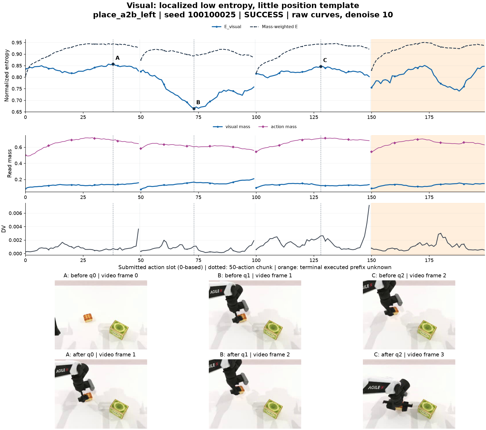
四模态各自的加权贡献（纵轴分别缩放）
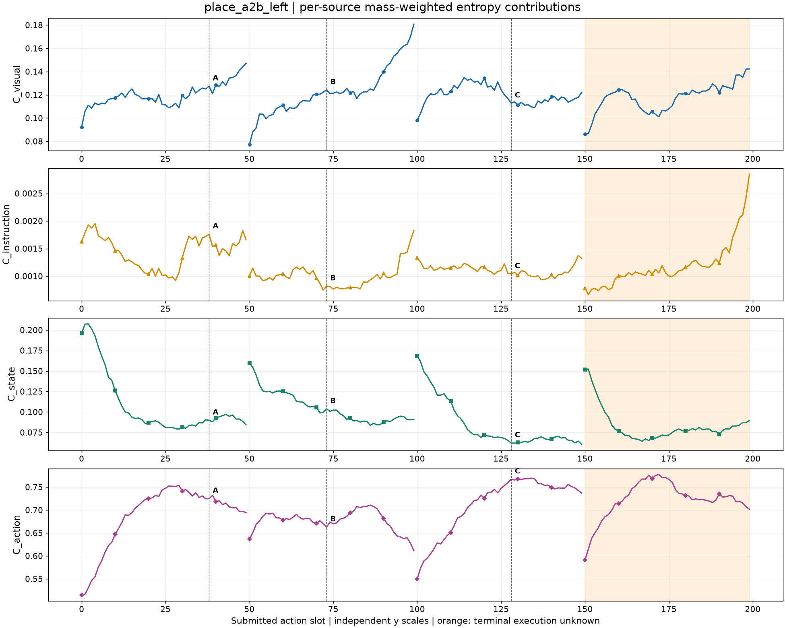
| 点 | 视觉C | 指令C | 状态C | 动作C | 总Ew |
|---|
| A | 0.12745 | 0.00176 | 0.08982 | 0.72490 | 0.94393 |
| B | 0.12424 | 0.00082 | 0.10372 | 0.66290 | 0.89167 |
| C | 0.11279 | 0.00104 | 0.06209 | 0.76714 | 0.94306 |
C同时受读取量和内部熵影响。E下降不意味着C下降；例如视觉抓取例，E的低谷被M上升部分抵消。原始逐动作曲线保留全部细节，没有平滑。
展开：四模态、读取量、去噪轮对照和DV
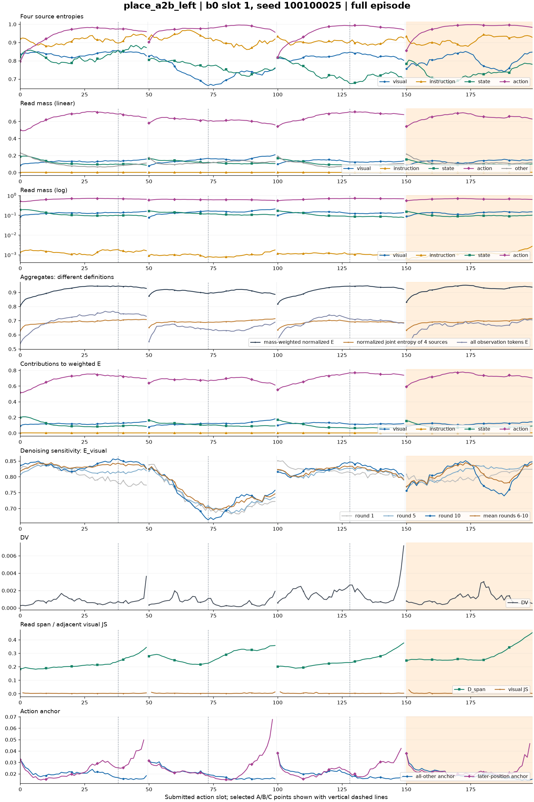
状态：宽低区与恢复
状态熵0.925→0.683→0.937，宽低区对应同一执行的中段。它描述状态token的读取分散程度，不是机器人状态不确定度。
place_bread_skillet · seed 331000 · 成功 · 位置模板 13.5% · 末轮与末5轮均值相关 0.959
主要信号与执行帧
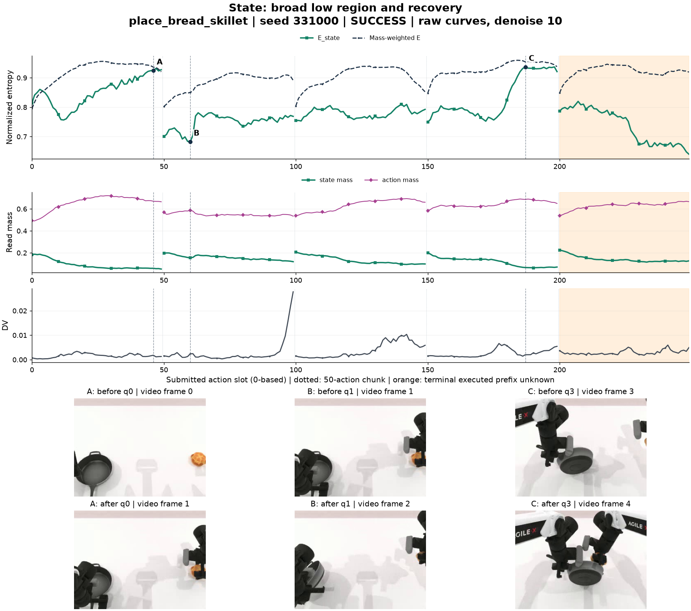
四模态各自的加权贡献（纵轴分别缩放）
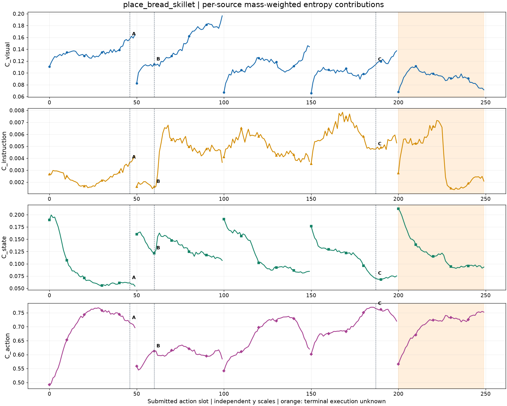
| 点 | 视觉C | 指令C | 状态C | 动作C | 总Ew |
|---|
| A | 0.15710 | 0.00366 | 0.06125 | 0.71413 | 0.93614 |
| B | 0.11459 | 0.00163 | 0.12178 | 0.61251 | 0.85050 |
| C | 0.11403 | 0.00477 | 0.07022 | 0.76500 | 0.95402 |
C同时受读取量和内部熵影响。E下降不意味着C下降；例如视觉抓取例，E的低谷被M上升部分抵消。原始逐动作曲线保留全部细节，没有平滑。
展开：四模态、读取量、去噪轮对照和DV
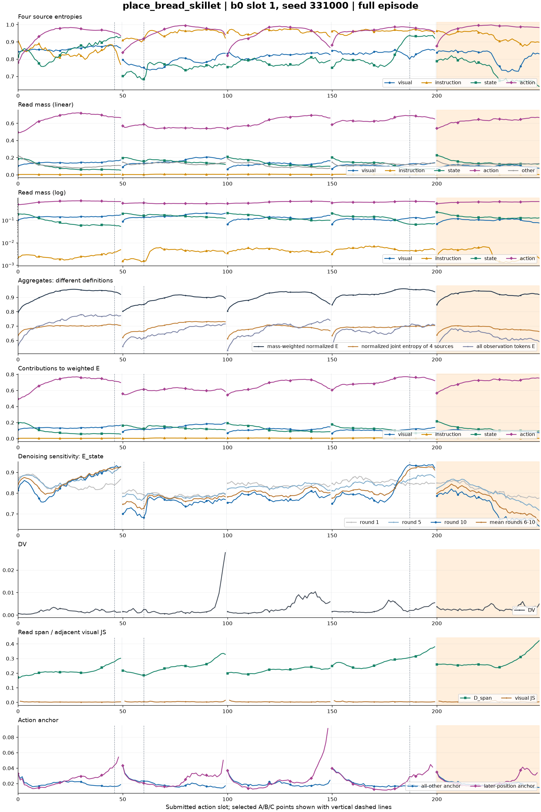
指令：清楚的深谷，加权后很弱
指令熵0.942→0.194→0.922，B处指令读取量虽增至1.93%，动作读取量仍为65.81%；总加权熵为0.934。单模态的大振幅会被聚合掩盖。
place_bread_basket · seed 322100 · 成功 · 位置模板 22.7% · 末轮与末5轮均值相关 0.953
主要信号与执行帧
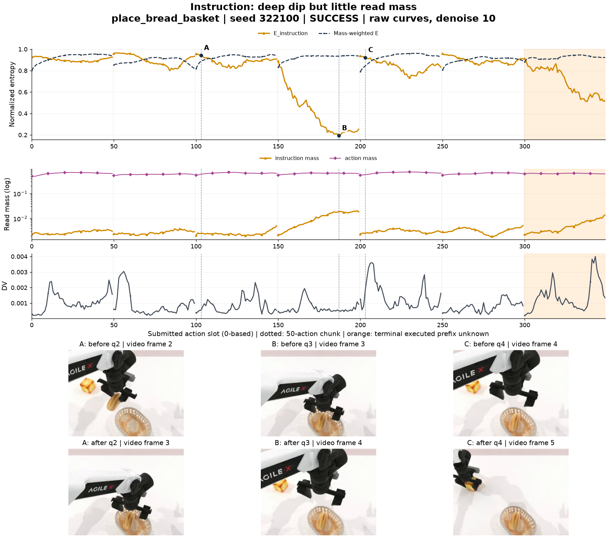
四模态各自的加权贡献（纵轴分别缩放）
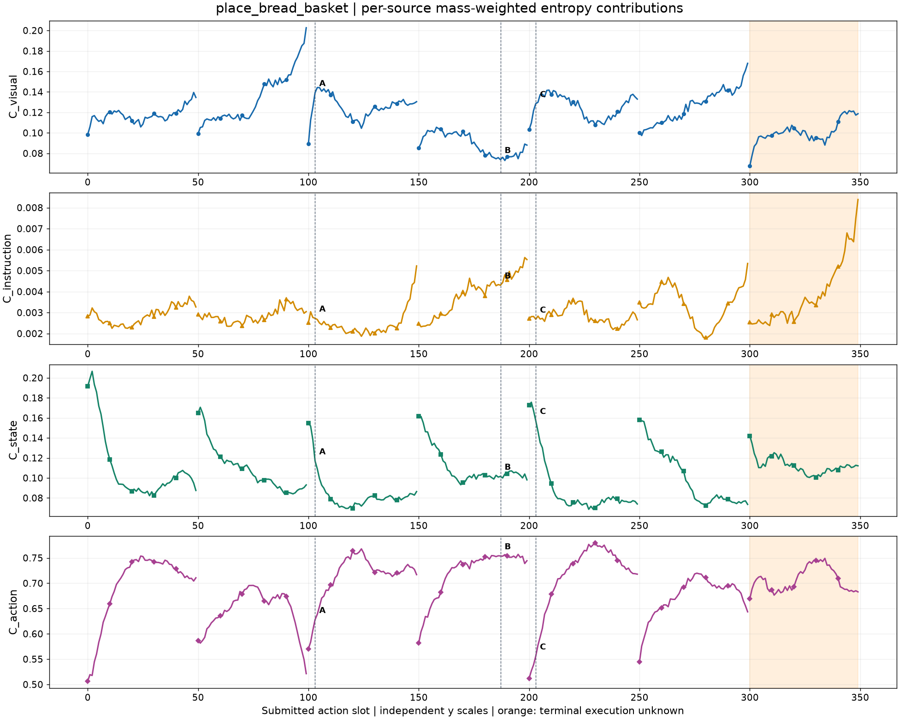
| 点 | 视觉C | 指令C | 状态C | 动作C | 总Ew |
|---|
| A | 0.13920 | 0.00273 | 0.11698 | 0.62798 | 0.88690 |
| B | 0.07386 | 0.00431 | 0.10159 | 0.75396 | 0.93372 |
| C | 0.12855 | 0.00268 | 0.15726 | 0.55591 | 0.84440 |
C同时受读取量和内部熵影响。E下降不意味着C下降；例如视觉抓取例，E的低谷被M上升部分抵消。原始逐动作曲线保留全部细节，没有平滑。
展开：四模态、读取量、去噪轮对照和DV
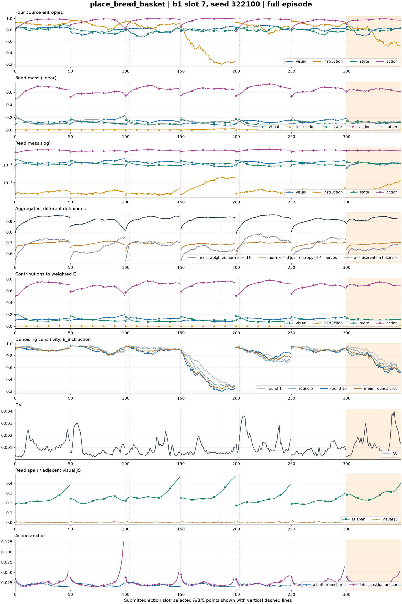
新增叠碗例：指令晚段骤降
A/B/C按动作位置递增；已知执行的q6中，指令熵由约0.739下降到0.208，读取量升到1.85%，总加权熵仍约0.930。位置模板解释量2.6%；这是可保留的局部结构，事件解释以录像为准。
stack_bowls_two · seed 100100005 · 成功 · 位置模板 2.6% · 末轮与末5轮均值相关 0.878
主要信号与执行帧
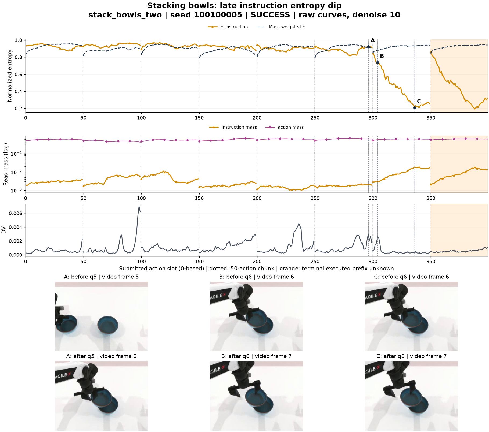
四模态各自的加权贡献（纵轴分别缩放）
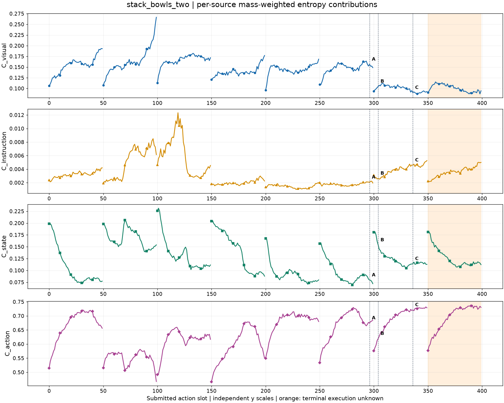
| 点 | 视觉C | 指令C | 状态C | 动作C | 总Ew |
|---|
| A | 0.15636 | 0.00206 | 0.07955 | 0.67464 | 0.91259 |
| B | 0.10474 | 0.00264 | 0.15365 | 0.61946 | 0.88048 |
| C | 0.09016 | 0.00459 | 0.11400 | 0.72116 | 0.92991 |
C同时受读取量和内部熵影响。E下降不意味着C下降；例如视觉抓取例，E的低谷被M上升部分抵消。原始逐动作曲线保留全部细节，没有平滑。
展开：四模态、读取量、去噪轮对照和DV
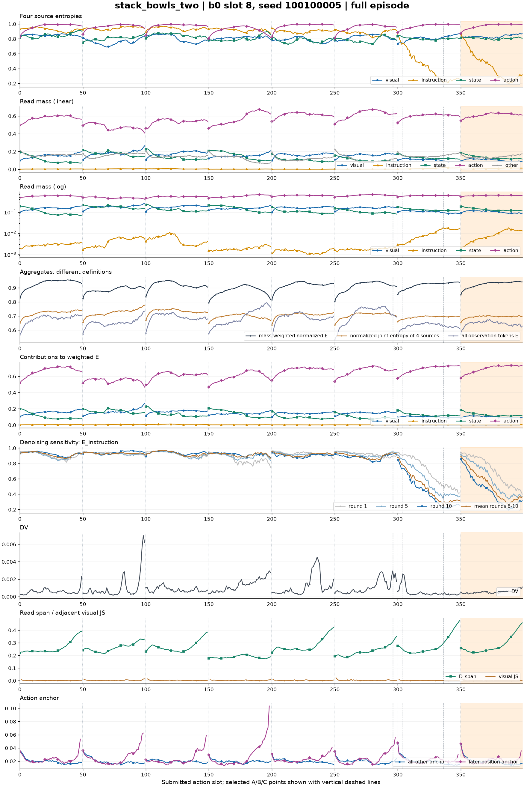
反例：总加权熵的漂亮双峰
曲线平滑、双峰突出，但同任务的chunk位置模板解释量约69%。主要反映每次50动作预测内部的位置形状，暂不把峰值选为关键事件。
move_playingcard_away · seed 241400 · 成功 · 位置模板 69.3% · 末轮与末5轮均值相关 0.971
主要信号与执行帧
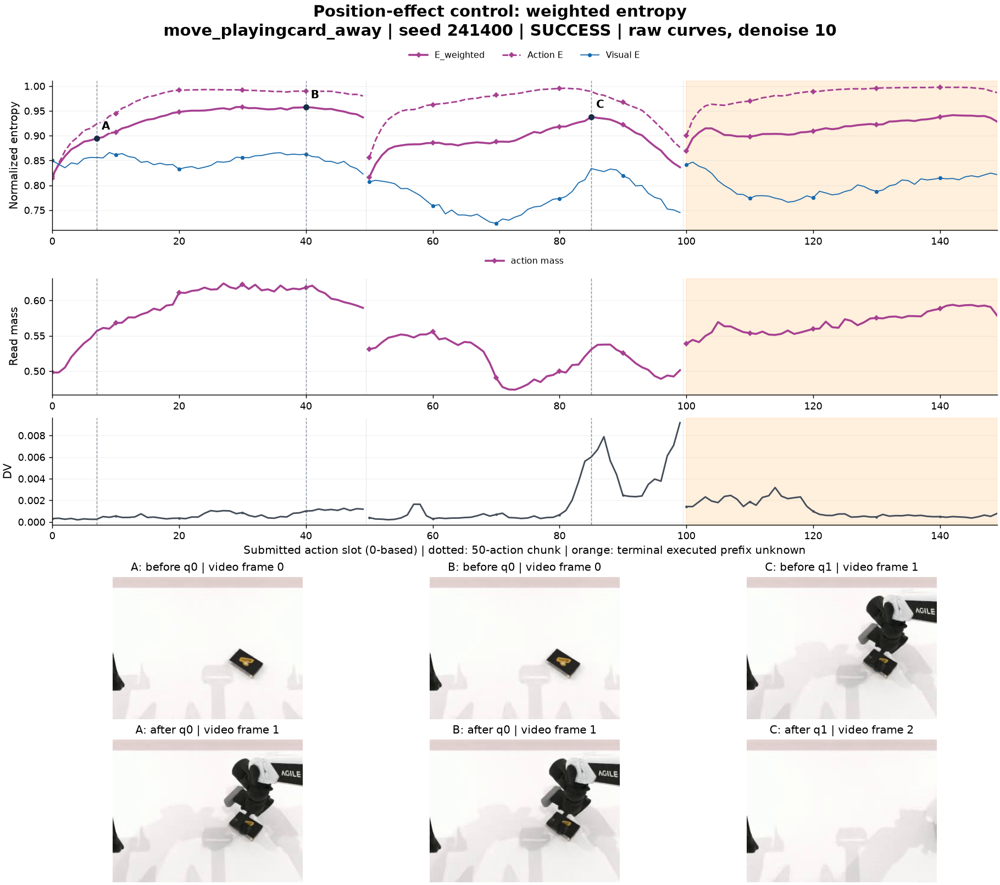
四模态各自的加权贡献（纵轴分别缩放）
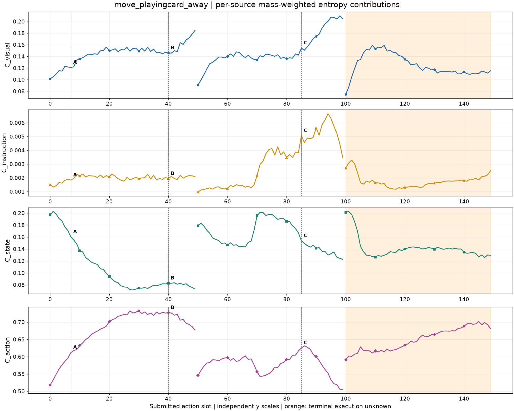
| 点 | 视觉C | 指令C | 状态C | 动作C | 总Ew |
|---|
| A | 0.12088 | 0.00183 | 0.16002 | 0.61172 | 0.89445 |
| B | 0.14578 | 0.00194 | 0.08275 | 0.72704 | 0.95751 |
| C | 0.15425 | 0.00505 | 0.15361 | 0.62517 | 0.93809 |
C同时受读取量和内部熵影响。E下降不意味着C下降；例如视觉抓取例，E的低谷被M上升部分抵消。原始逐动作曲线保留全部细节，没有平滑。
展开：四模态、读取量、去噪轮对照和DV
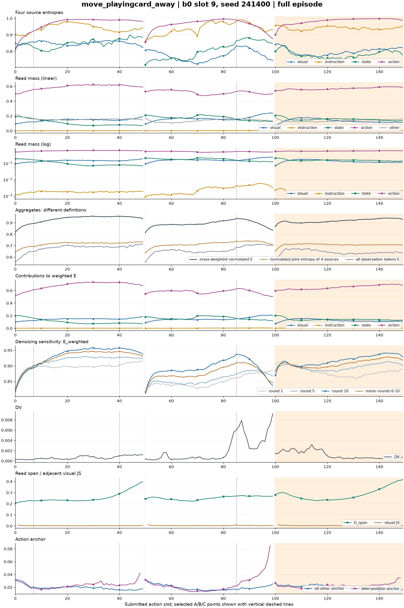
失败对照：有结构，也没有完成任务
状态熵出现0.534的宽低区并恢复到0.913，最终仍达到步数上限。保留作失败对照；曲线清楚不等于任务成功。
place_dual_shoes · seed 380500 · 失败/步数上限 · 位置模板 0.0% · 末轮与末5轮均值相关 0.950
主要信号与执行帧
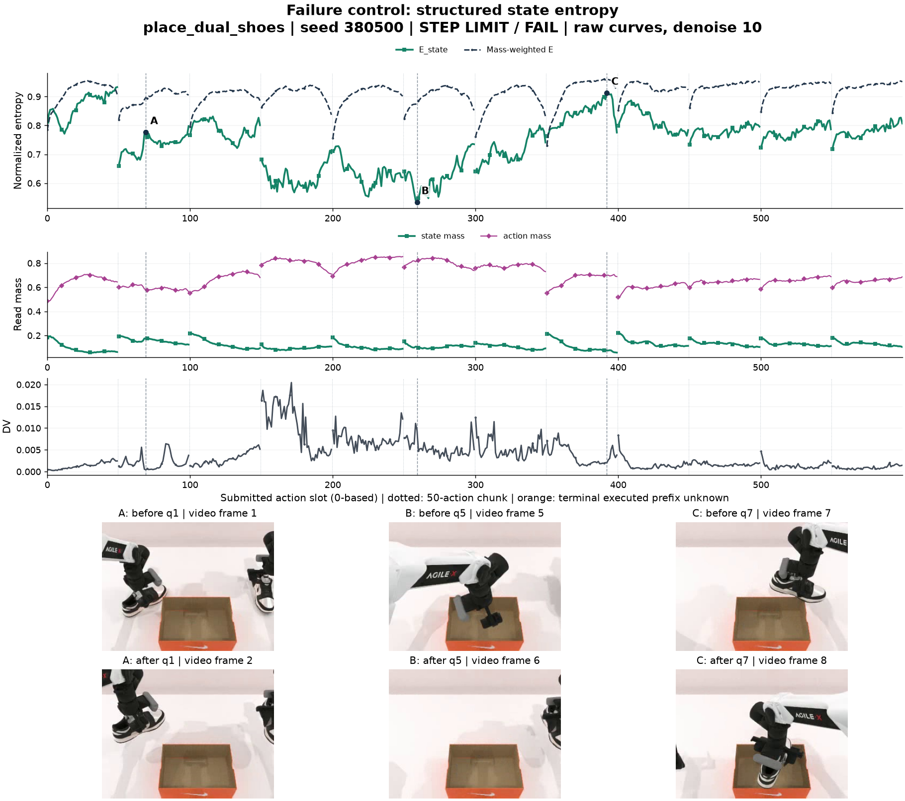
四模态各自的加权贡献（纵轴分别缩放）
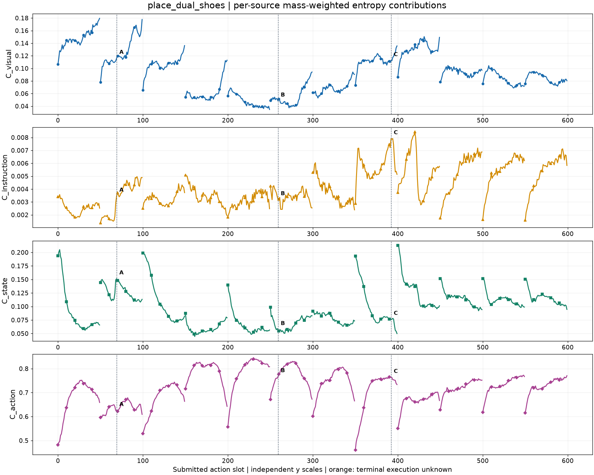
| 点 | 视觉C | 指令C | 状态C | 动作C | 总Ew |
|---|
| A | 0.11611 | 0.00346 | 0.15134 | 0.62590 | 0.89681 |
| B | 0.04834 | 0.00319 | 0.05762 | 0.76695 | 0.87610 |
| C | 0.11256 | 0.00791 | 0.07649 | 0.76396 | 0.96093 |
C同时受读取量和内部熵影响。E下降不意味着C下降；例如视觉抓取例，E的低谷被M上升部分抵消。原始逐动作曲线保留全部细节，没有平滑。
展开：四模态、读取量、去噪轮对照和DV
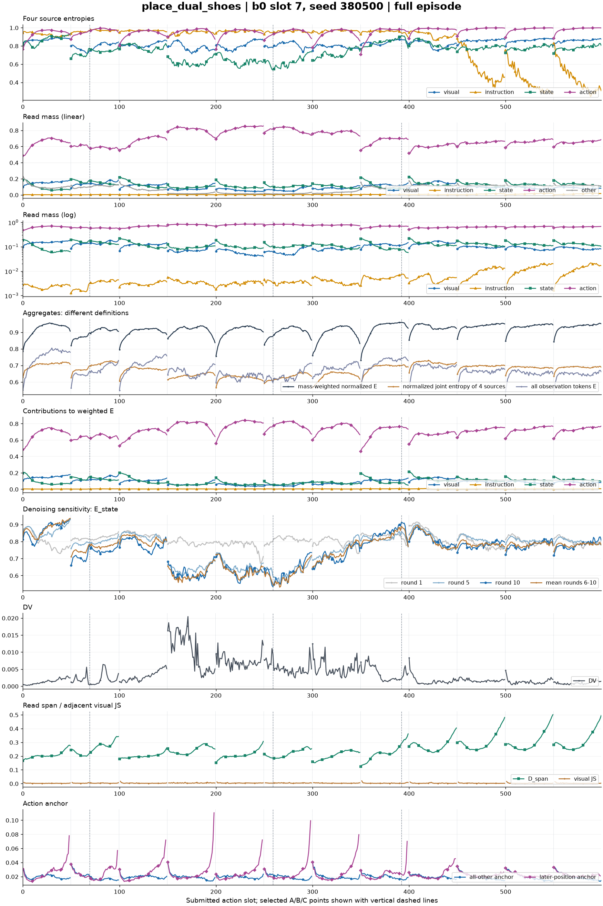
反例：动作熵的单峰
动作熵形状清楚，但同任务chunk位置模板解释量约68%。动作来源读取量大，使总加权熵容易继承这种周期形状。
beat_block_hammer · seed 100150020 · 成功 · 位置模板 67.9% · 末轮与末5轮均值相关 0.989
主要信号与执行帧
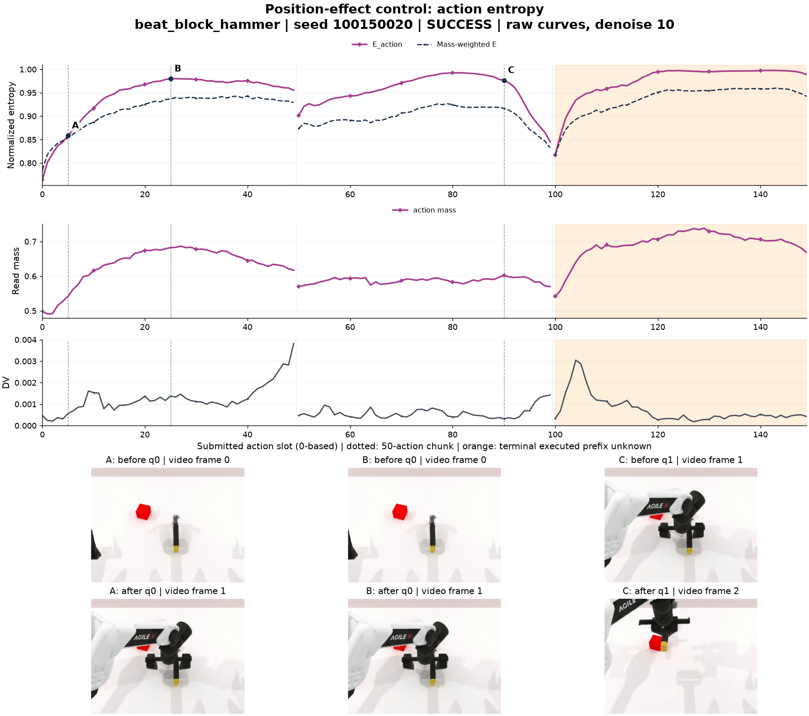
四模态各自的加权贡献（纵轴分别缩放）
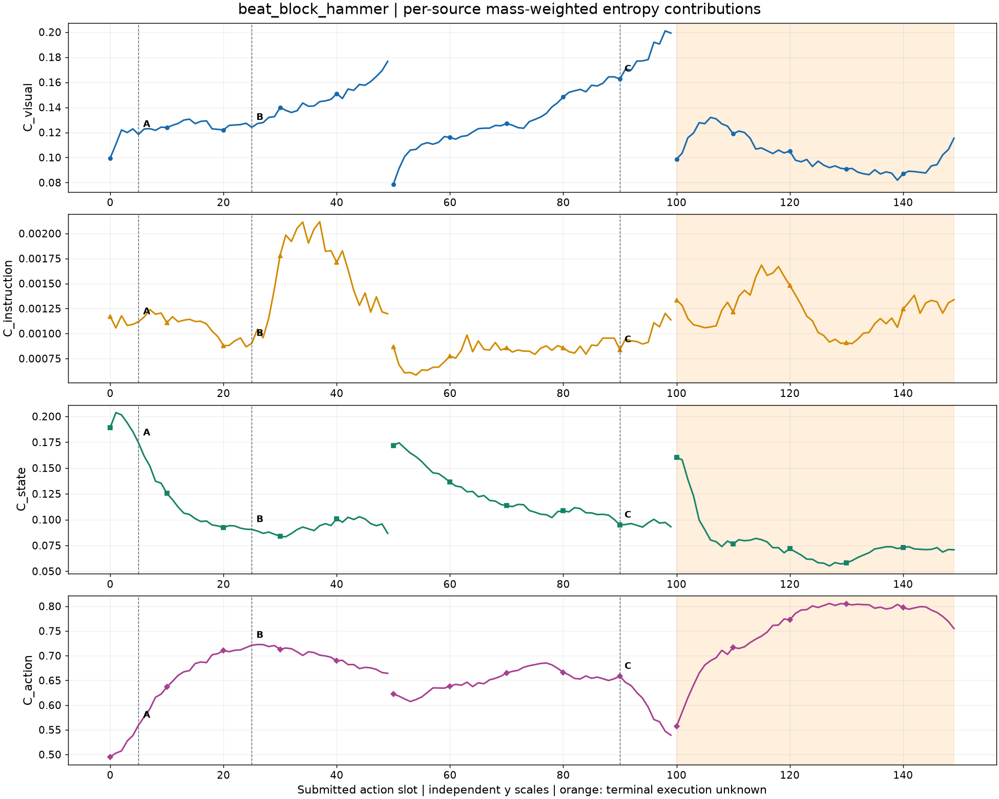
| 点 | 视觉C | 指令C | 状态C | 动作C | 总Ew |
|---|
| A | 0.11846 | 0.00112 | 0.17443 | 0.55951 | 0.85353 |
| B | 0.12406 | 0.00090 | 0.09051 | 0.72126 | 0.93674 |
| C | 0.16261 | 0.00084 | 0.09480 | 0.65838 | 0.91662 |
C同时受读取量和内部熵影响。E下降不意味着C下降；例如视觉抓取例，E的低谷被M上升部分抵消。原始逐动作曲线保留全部细节，没有平滑。
展开：四模态、读取量、去噪轮对照和DV
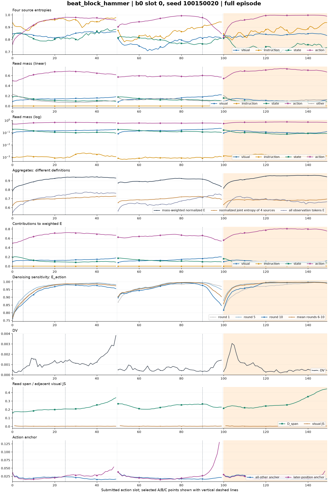